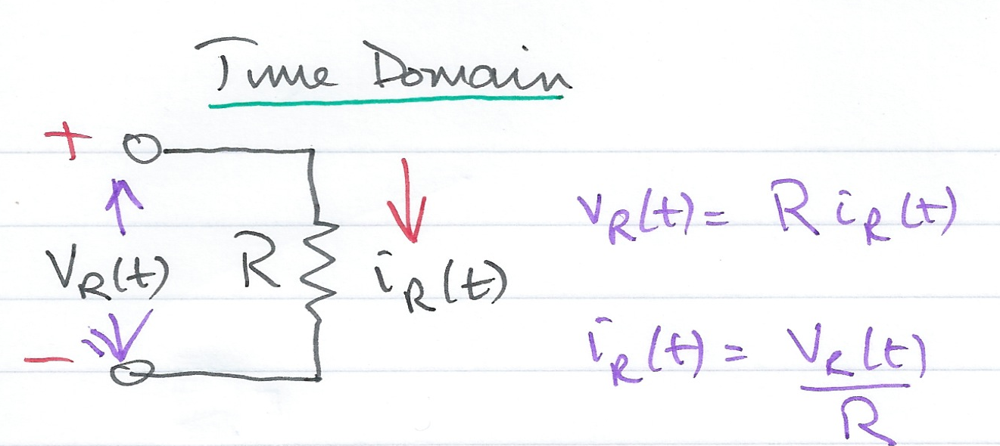
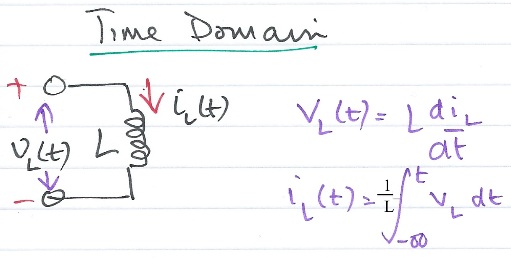
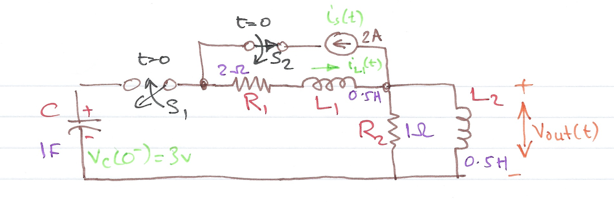
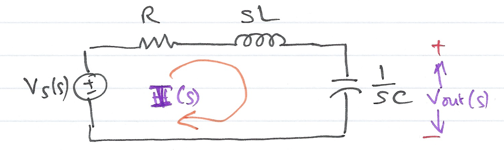
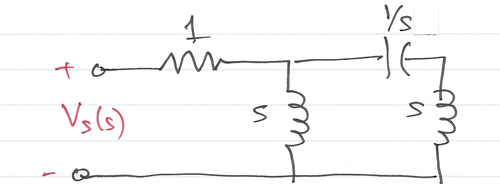
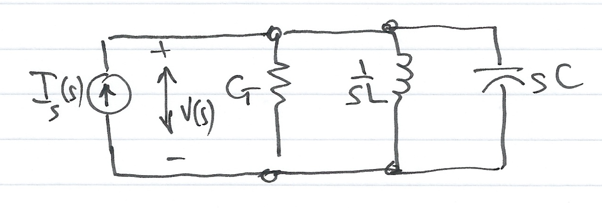

Worksheet 6
Contents
Worksheet 6#
To accompany Chapter 3.3 Using Laplace Transforms for Circuit Analysis#
Colophon#
This worksheet can be downloaded as a PDF file. We will step through this worksheet in class.
An annotatable copy of the notes for this presentation will be distributed before the third class meeting as Worksheet 6 in the Week 3: Classroom Activities section of the Canvas site. I will also distribute a copy to your personal Worksheets section of the OneNote Class Notebook so that you can add your own notes using OneNote.
You are expected to have at least watched the video presentation of Chapter 3.3 of the notes before coming to class. If you haven’t watch it afterwards!
After class, the lecture recording and the annotated version of this worksheet will be made available through Canvas.
% Matlab setup
clear all
format compact
Circuit Transformation from Time to Complex Frequency#
Time Domain Model of a Resistive Network#

For the circuit shown, which of the following equations represent the Laplace transform of the current flowing through, and the voltage across, the resistor \(R\)?
-> Open poll
Time Domain Model of an Inductive Network#

For the circuit shown, which of the following equations represent the Laplace transform of the current flowing through, and the voltage across, the inductor \(L\)?
-> Open poll
Time Domain Model of a Capacitive Network#

For the circuit shown, which of the following equations represent the Laplace transform of the current flowing through, and the voltage across, the capacitor \(C\)?
-> Open poll
Examples#
Example 1#
Use the Laplace transform method and apply Kirchoff’s Current Law (KCL) to find the voltage \(v_c(t)\) across the capacitor for the circuit below given that \(v_c(0^-) = 6\) V.

Example 2#
Use the Laplace transform method and apply Kirchoff’s Voltage Law (KVL) to find the voltage \(v_c(t)\) across the capacitor for the circuit below given that \(v_c(0^-) = 6\) V.
Example 3#
In the circuit below, switch \(S_1\) closes at \(t=0\), while at the same time, switch \(S_2\) opens. Use the Laplace transform method to find \(v_{\mathrm{out}}(t)\) for \(t > 0\).

Show with the assistance of MATLAB (See solution3.m) that the solution is
and plot the result.
Solution to Example 3#
We will use a combination of pen-and-paper and MATLAB to solve this.
1. Equivalent Circuit#
Draw equivalent circuit at \(t=0\)
2. Transform model#
Convert to transforms
3. Determine equation#
Determine equation for \(V_{\rm out}(s)\).
4. Complete solution in MATLAB#
In the lecture we showed that after simplification for Example 3
We will use MATLAB to factorize the denominator \(D(s)\) of the equation into a linear and a quadratic factor.
Find roots of Denominator D(s)#
p = roots([1, 8, 10, 4])
Find quadratic form#
syms s t
y = expand((s - p(2))*(s - p(3)))
Simplify coefficients of s#
y = sym2poly(y)
Complete the Square#
Plot result#
[r, p, k] = residue(2*conv([1,0],[1,3]),[1 8, 10,4])
yt=0:0.01:10;
Vout = 1.36.*exp(r(1).*t)...
+0.64.*exp(real(r(2)).*t).*cos(imag(r(2)).*t)...
-1.84.*exp(real(r(3)).*t).*sin(-imag(r(3)).*t);
plot(t, Vout); grid
title('Plot of Vout(t) for the circuit of Example 3')
ylabel('Vout(t) V'),xlabel('Time t s')
Worked Solution: Example 3#
File Pencast: example3.pdf - Download and open in Adobe Acrobat Reader.
The attached “PenCast” works through the solution to Example 3 by hand. It’s quite a complex, error-prone (as you will see!) calculation that needs careful attention to detail. This in itself gives justification to my belief that you should use computers wherever possible.
Please note, the PenCast takes around 39 minutes (I said it was a complex calculation) but you can fast forward and replay any part of it.
Alternative solution using transfer functions#
Vout = tf(2*conv([1, 0],[1, 3]),[1, 8, 10, 4])
impulse(Vout)
Complex Impedance \(Z(s)\)#
For the resistance \(R\)\(\Omega\), inductance \(L\)H and capacitance \(C\)F, which of the following represent the complex impedance of the components?
-> Open Poll
Consider the \(s\)-domain RLC series circuit, wehere the initial conditions are assumed to be zero.

For this circuit, the sum
represents that total opposition to current flow. Then,
and defining the ratio \(V_s(s)/I(s)\) as \(Z(s)\), we obtain
The \(s\)-domain current \(I(s)\) can be found from
where
Since \(s = \sigma + j\omega\) is a complex number, \(Z(s)\) is also complex and is known as the complex input impedance of this RLC series circuit.
Exercise#
Use the previous result to give an expression for \(V_c(s)\)
Example 4#
For the network shown below, all the complex impedance values are given in \(\Omega\) (ohms).

Find \(Z(s)\) using:
nodal analysis
successive combinations of series and parallel impedances
Solutions: Pencasts ex4_1.pdf and ex4_2.pdf – open in Adobe Acrobat.
Complex Admittance \(Y(s)\)#
For the resistor \(R\)Ω, inductor \(L\)H and capacitance \(C\)F, which of the following represent the complex admittance of the components?
-> Open Poll
Consider the \(s\)-domain GLC parallel circuit shown below where the initial conditions are zero.

For this circuit
Defining the ratio \(I_s(s)/V(s)\) as \(Y(s)\) we obtain
The \(s\)-domain voltage \(V(s)\) can be found from
where
\(Y(s)\) is complex and is known as the complex input admittance of this GLC parallel circuit.
Example 5 - Do It Yourself#
Compute \(Z(s)\) and \(Y(s)\) for the circuit shown below. All impedence values are in \(\Omega\) (ohms). Verify your answers with MATLAB.

Answer 5#
Matlab verification: solution5.m
Example 5: Verification of Solution#
syms s;
z1 = 13*s + 8/s;
z2 = 5*s + 10;
z3 = 20 + 16/s;
z = z1 + z2 * z3 /(z2 + z3)
z10 = simplify(z)
pretty(z10)
Admittance#
y10 = 1/z10;
pretty(y10)
Matlab Solutions#
For convenience, single script MATLAB solutions to the examples are provided and can be downloaded from the accompanying MATLAB folder in the GitHub repository.
Solution 3 [solution3.m]
Solution 5 [solution5.m]
cd ../matlab
ls
open solution3
open solution5